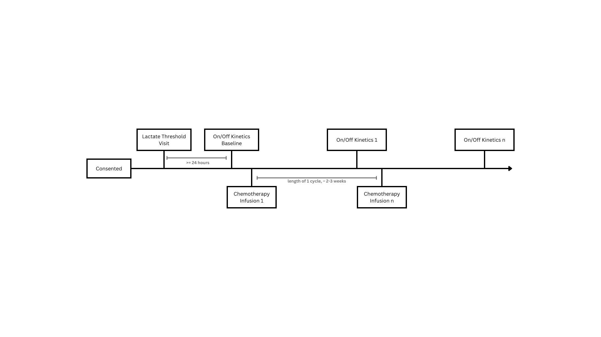

Chapter 4 Data Collection
Everyone is required to wear a mask while the patient is in the lab. Prisma Health keeps a supply of masks in the hallway that connects to the parking garage. Since our patients are receiving chemotherapy and their immune systems will not be functioning well during chemotherapy treatment, the principal investigators decided masking is required. Patients and any people they bring with them are not required to wear masks. If they wish to, direct them to the supply of masks in the hallway.

4.1 Lactate Threshold Visit (First Visit)
This protocol is the participant’s first visit to the lab. Have any medical students helping out with testing arrive to the lab at least 30 minutes prior to the participant.
4.1.1 Preparation
- Turn on the PARVO computer.
- At least an hour prior to the time the participant is scheduled to arrive, turn on the metabolic cart by flipping the power switch on the extension cord at the back of the cart.
- Turn on the computer monitor and wait for the screen to load.
- Press
F1. - Enter the password to log in.
- The PARVOMedics software will open automatically.
- Set the date and time on the PARVO computer.
- In the bottom right, click on the date and open the date and time settings. Change the date and time to today’s date and time.
- Prepare the patient’s folder.
- Look in the filing cabinet for the folder labelled with the patient’s study ID. Get it out.
- If the patient doesn’t have a folder yet, look in the very back of the top drawer of the cabinet. Frankie keeps some folders in the back that will have all the forms needed for a lactate threshold test. Write the patient’s ID number on the folder tab.
- Check in the folder for the following forms:
- MMSE C.3
- Godin-Leisure Time Exercise Questionnaire C.2
- Physical Activity Intake C.4
- BFI C.1
- PROMIS Global Health C.5
- Lactate Threshold Data Collection Sheet
- Contact Information Form
- If you cannot find them or need to print more, you can download the forms you need from the file repository in RedCap. Log in to Frankie or Sara’s desktop computer in order to print to the HPL printer. The HPL printer is VV82.
- Label the forms.
- Write the patient’s study ID number, visit ID, and the date in the upper left corner of each sheet in pen. For Lactate Threshold Visits, the visit ID is
LT.
- Write the patient’s study ID number, visit ID, and the date in the upper left corner of each sheet in pen. For Lactate Threshold Visits, the visit ID is
- Place the MMSE, GLTEQ, Lactate Threshold Data Collection Sheet, and an extra sheet of blank printer paper on one clipboard. These will be filled out by laboratory staff.
- Place the BFI, PROMIS Global Health, Contact Information Form, and Physical Activity History (Intake) forms on a different clipboard. These will be filled out by the participant. Put a pen with the clipboard for the patient to use when filling out the forms.
- Assemble the VO2 mask except for the blue rubber part as described in B.2.3. Place the assembled pieces in a sterile pink bucket.
- Prepare the PortaMon.
- Prepare the device by putting in a charged battery, wrapping the PortaMon in plastic saran wrap, and placing the double sided taupe tape. For more details, see ??.
- Connect the PortaMon to the Oxysoft software as described in A.6 but do not begin data collection. Leave the screen on the pop up where you would click
Finish.
- Run lactate meter controls as described in D.2.1.1.
- Get a washcloth out of the cabinet behind the door and put it by the ultrasound to wipe off ultrasound gel during device placement.
- Calibrate the PARVO.
- CHECK THE TIME. THE PARVO COMPUTER MUST HAVE BEEN ON FOR MORE THAN 30 MINUTES TO PROCEED WITH CALIBRATION.
- DOUBLE CHECK THAT THE DATE AND TIME ON THE PARVO HAVE BEEN RE-SET BEFORE DOING THE CALIBRATION.
- Do the gas calibration as described in B.2.1.
- Only save the calibration results if the percent change in CO2 is less than 1%. If the percent change is greater than 1% (either positive or negative change), open the door, turn on the fan, wait ten minutes and try again. If the percent change is greater than 1% and there is no more time, save the most recent gas calibration and make sure to tell Frankie Bennet about it.
- Write down the humidity, room temperature, barometric pressure, and percent change in CO2 from the gas calibration on the data collection sheet.
- Do the flowmeter calibration as described in B.2.1.
- If you do the gas calibration prior to doing the flowmeter calibration, the PARVO software will automatically fill in the humidity, room temperature, and barometric pressure as saved from the gas calibration.
- The percent change should be less than 1%. If it is greater than 1%, do not save and try again in 10 minutes.
- CHECK THE TIME. THE PARVO COMPUTER MUST HAVE BEEN ON FOR MORE THAN 30 MINUTES TO PROCEED WITH CALIBRATION.
- Open the exercise test in the PARVOMedics software.
- In the first and last name inputs, type in the NIRS ID number and visit ID (
NIRS_ID#_LT_MM_DD_YYYY). The first and last name inputs will match. - Input the patient’s age in the appropriate input section.
- You will get the patient’s height and weight after they arrive.
- Click
Savein the upper right corner.
- In the first and last name inputs, type in the NIRS ID number and visit ID (
- On the stationary bike setting screen, it will display
TODO. Press the circular button. It should now displayTODO. Press the circular button again. The screen should displayTODO. - Approximately 10-15 minutes before the patient is supposed to arrive, send someone to the Cancer Institute lobby to meet them. They will walk the patient up to the Human Performance Lab.
4.1.2 Exclusion Criteria
There are three exclusion criteria that we must test before continuing with any data collection.
- Adipose Tissue Thickness
In order for the PortaMon to collect useful data, the subcutaneous adipose tissue thickness above the vastus lateralis and directly under the device must be less than 2 centimeters.
Use the steps described in D.1.1 to measure the participant’s subcutaneous adipose tissue thickness above their vastus lateralis. If ATT is less than 2 centimeters, the participant continues through the next steps.
Place the NIRS device over the area measured using ultrasound following the steps described in A.7.
Be sure to take a picture of the device placement on the vastus lateralis. Place the tape measure so that 0 is on the top of the patient’s patella and lay the tape measure to the side of the PortaMon.
- Sufficient Physical Activity
Sedentary patients will be unable to complete the testing protocol and thus will be excluded from participation. To determine physical activity levels, administer the Godin-Leisure Time Exercise Questionnaire C.2. If the score is less than 14, the patient would be sedentary and will not be eligible to participate. Administer the GLTEQ to the patient and score it immediately.
- Mental State
Patients must be aware of their situation and fully able to consent to participation. The Mini-Mental State Examination C.3 helps detect any underlying issues with memory that would render a patient unable to participate. If the patient scores less than TODO, the patient will not be eligible to participate due to mental conditions. Administer the MMSE to the patient and score it immediately.
4.1.3 Data Collection
- Have the subject complete the following instruments:
- Review the completed Godin-Leisure Time Exercise Questionnaire and Physical Activity History instruments. Use your best judgement in collaboration with the other investigators to determine the wattage jumps. See E.2.2 for further information about deciding wattage jumps.
- Take the patient’s blood pressure. Write down the blood pressure on the data collection sheet.
- Take the patient’s oral temperature. Write down the oral temperature on the data collection sheet.
- Take the patient’s blood pressure a second time. Write down the blood pressure on the data collection sheet.
- Size the participant for the VO2 mask by holding the sizing chart up to their face. Select the appropriate VO2 mask and attach it to the assembled parts of the mask. Record the measured mask size on the data collection sheet.
- Have the patient take off their shoes and take their weight, twice. Write down both weights on the data collection sheet. Do not say the weight out loud, just have the person writing down the weight stand beside the scale and write it down.
- Have the patient stand on the scale and get their height. Have them step off the scale and step back on to get their height a second time. Write down both height measurements on the data collection sheet.
- Have any men leave the room. Spray the HR monitor sensor with water from the spray bottle. Place the heart rate monitor under the patient’s bra strap over their sternum. Check that the HR monitor is getting a good signal by turning on the watch. If the HR monitor is not getting a good signal, make sure the whole sensor on the inside of the strap is touching skin and not over the bra. Try to move the sensor higher on the chest. Put more water in between the sensor and the skin.
- Before having the patient get on the stationary bike, explain the testing protocol to the patient. Make sure they understand that there will be finger pricks, stationary biking up to 20 minutes (but hopefully less if we estimated correctly), and no rest time during this test. Explain the RPE scale and how it will be used during testing.
- Have the patient get on the stationary bike. Adjust the seat height and handlebars as needed.
- If the PortaMon has been on for at least 10 minutes, proceed.
- Place the assembled mask on the participant’s face.
- Check that the mask is properly fitted and forms an airtight seal.
- Connect the clear tubing to the clear end of the mask.
- Make sure the patient’s weight was input in the exercise testing input on the PARVO computer.
- Start the test on the PARVO. Write down the time on the NIRS computer that the PARVO test was initiated.
- Conduct Lactate Threshold Exercise Test as described in E.2.
- Take the mask off the patient’s face. Help the patient get off the bike. Remove the NIRS device and the heart rate monitor.
- Walk the patient back down to the lobby. Thank them for their time and participation.
4.1.4 After Data Collection
- Clean and put away equipment.
- Pull the saran wrap and tape off of the PortaMon and throw it away.
- Remove the PortaMon battery and charge it.
- Remove all dirty PARVO parts and place in pink bucket.
- Wipe down the outside of the PortaMon case with antibacterial wipes.
- Remove the button from the heart rate monitor. Wipe the button down with antibacterial wipes and put the heart rate monitor strap in the pink bucket to be cleaned with the PARVO mask parts.
- Take the pink bucket and put it on the blue cart. Follow the steps described in @ref() to clean and sanitize the pieces.
- Make sure all needles from finger pricks are disposed of in the sharps container.
- Throw away all used gauze and antibacterial wipes.
- Save PortaMon data.
- Click
Filein the upper left. - Click
Save project file. - Open the Windows File Explorer.
- If
NIRS Datais not underQuick Accessin the top left, use the following file path to get to the appropriate folder:This PC/OS (C:)/Artinis NIRS/NIRS Data - Find the file just created. Its name will match what was typed in when the measurement was created. It will have the extension
.oxy4. - Make a copy of that file. DO NOT delete the file from this location.
- Go to the desktop.
- Open the folder
NIRS FILES. - Open the appropriate patient’s folder.
- Save the copy of the measurement in this folder.
- Rename the measurement as needed to match the naming convention within the folder.
- Open RedCap.
- Go to the File Repository.
- Open the folder
OXYSOFT. - Open the folder
Oxy4 Files. - Open the appropriate patient’s folder.
- Upload the
.oxy4file.
- Click
- Save PARVO data.
- Print out the 10-second report of the data collected by the PARVO and place with the other data collection sheets.
- Export the PARVO data as an
.XMLfile as “breath by breath”. - Since the PARVO computer is not connected to the internet, you must use a USB drive to transfer the files off of the PARVO computer. Make a copy of the exported file and save it on the USB drive.
- Safely eject the USB drive from the PARVO computer.
- Use a different computer with internet access to upload the copy of the PARVO file into the RedCap File Repository.
- In the File Repository, open the
PARVOfolder. - Open the
Breath by Breathfolder. - Open the appropriate patient’s folder.
- Upload the
.XMLfile.
- Save Other data.
- Measure the seat height, seat depth, and pedal length of the stationary bike and record on the data collection sheet.
4.2 On/Off Kinetics Visit
4.2.1 Preparation
- Turn on the PARVO.
- At least an hour prior to the time the participant is scheduled to arrive, turn on the metabolic cart by flipping the power switch on the extension cord at the back of the cart.
- Turn on the computer monitor and wait for the screen to load.
- Press
F1. - Enter the password to log in.
- The PARVOMedics software will open automatically.
- Set the date and time on the PARVO computer.
- In the bottom right, click on the date and open the date and time settings. Change the date and time to today’s date and time.
- Get the patient’s folder out of the locked filing cabinet.
- Ensure the following forms are printed out:
- Physical Activity History (Follow Up)
- BFI
- PROMIS Global Health
- On/Off Kinetics Data Collection Sheet
- Label the forms.
- Write the patient’s study ID number, visit ID, and the date in the upper left corner of each sheet in pen. For On/Off Kinetics Visits, the visit ID is
FP.
- Write the patient’s study ID number, visit ID, and the date in the upper left corner of each sheet in pen. For On/Off Kinetics Visits, the visit ID is
- Place the Full Protocol Data Collection Sheet on one clipboard. This will be filled out by laboratory staff.
- Place the BFI, PROMIS Global Health, and Physical Activity History (Follow Up) forms on a different clipboard. These will be filled out by the participant. Put a pen with the clipboard for the patient to use when filling out the forms.
- Assemble the VO2 mask. Place the assembled pieces in a sterile pink bucket.
- Prepare the PortaMon as described in ?? by putting in a charged battery, wrapping the PortaMon in plastic saran wrap, and placing the double sided taupe tape.
- If the PARVO has been on for more than 30 minutes, do the gas calibration as described in B.2.1.
- Make sure the date and time have been changed before doing the calibration.
- Only save the calibration results if the percent change in CO2 is less than 1%. If the percent change is greater than 1% (either positive or negative change), open the door, turn on the fan, wait ten minutes and try again. If the percent change is greater than 1% and there is no more time, save the most recent gas calibration and make sure to tell Frankie Bennet about it.
- Write down the humidity, room temperature, and barometric pressure from the gas calibration on the data collection sheet.
- Do the flowmeter calibration as described in B.2.1.
_ If you do the gas calibration prior to doing the flowmeter calibration, the PARVO software will automatically fill in the humidity, room temperature, and barometric pressure as saved from the gas calibration.
- The percent change should be less than 1%. If it is greater than 1%, do not save and try again in 10 minutes.
- Open the exercise test in the PARVOMedics software.
- In the first and last name inputs, type in the NIRS ID number and visit ID (
NIRS_ID#_FP_CYCLE#). The first and last name inputs will match. - Input the patient’s age in the appropriate input section.
- Input the patient’s height in the appropriate input section.
- You will get the patient’s weight after they arrive.
- Click
Savein the upper right corner. - Click
OKto go to the next screen. - Change the power wattage to the appropriate power wattage for the patient. - Click
Save. - Exit the exercise test settings.
- Re-open the exercise test to the pop up with the weight input.
- In the first and last name inputs, type in the NIRS ID number and visit ID (
- Connect the PortaMon to the Oxysoft software as described in A.6 but do not begin data collection. Leave the screen on the pop up where you would click
Finish. - Get a washcloth out of the cabinet behind the door and put it by the ultrasound to wipe off ultrasound gel during device placement.
- On the stationary bike setting screen, it will display
TODO. Press the circular button. It should now displayTODO. Press the circular button again. The screen should displayTODO. - Change the bike seat settings to match the settings recorded from the lactate threshold visit.
- Place the picture of the NIRS device placement from lactate threshold testing by the ultrasound.
- Approximately 10-15 minutes before the patient is supposed to arrive, send someone to the Cancer Institute lobby to meet them. They will walk the patient up to the Human Performance Lab.
4.2.2 Data Collection
- If the patient is not wearing shorts or equivalent, offer them the paper shorts stored under the bed in the back corner of the lab.
- Using the reference photograph of the NIRS placement taken at lactate threshold testing, mark the device location on the patient’s vastus lateralis with a marker.
- Use the ultrasound to measure the ATT at the marker.
- Compare the measured ATT with the ATT measured at lactate threshold.
- If the measurements are within 0.25 cm of each other, proceed with device placement.
- If the measurements are greater than 0.25 cm of each other, check the reference photograph and measurement of the location and try to ultrasound again.
- Write down the ATT measurement on the data collection sheet.
- Have the subject complete the following instruments:
- Take the patient’s blood pressure. Write down the blood pressure on the data collection sheet.
- Take the patient’s oral temperature. Write down the oral temperature on the data collection sheet.
- Take the patient’s blood pressure a second time. Write down the blood pressure on the data collection sheet.
- Have the patient take off their shoes and take their weight, twice. Write down both weights on the data collection sheet. Do not say the weight out loud, just have the person writing down the weight stand beside the scale and write it down.
- Have any men leave the room. Spray the HR monitor sensor with water from the spray bottle. Place the heart rate monitor under the patient’s bra strap over their sternum. Check that the HR monitor is getting a good signal by turning on the watch. If the HR monitor is not getting a good signal, make sure the whole sensor on the inside of the strap is touching skin and not over the bra. Try to move the sensor higher on the chest. Put more water in between the sensor and the skin.
- Have the patient get on the stationary bike. Adjust the seat height and handlebars as needed.
- If the PortaMon has been on for at least 10 minutes, proceed.
- Place the assembled mask on the participant’s face.
- Check that the mask is properly fitted and forms an airtight seal.
- Connect the clear tubing to the clear end of the mask.
- Make sure the patient’s weight was input in the exercise testing input on the PARVO computer.
- Start the test on the PARVO. Write down the time on the NIRS computer that the PARVO test was initiated.
- Conduct On/Off Kinetics Exercise Test as described in E.3.
- Take the mask off the patient’s face. Help the patient get off the bike. Remove the NIRS device and the heart rate monitor.
- Walk the patient back down to the lobby. Thank them for their time and participation.